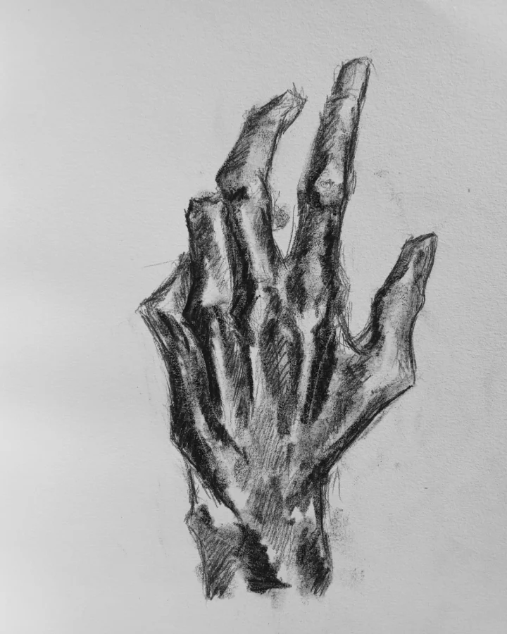
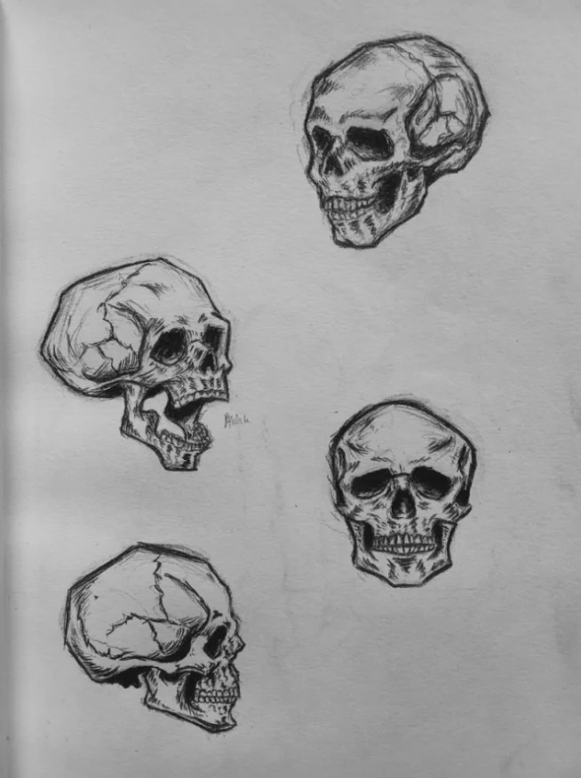
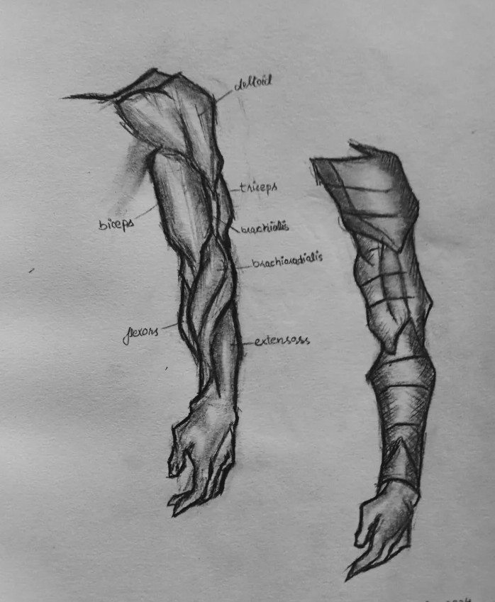

Understanding Proportions and Anatomy in Figure Drawing
Mastering proportions and anatomy is essential for creating realistic and dynamic figure drawings. Here are some key concepts to keep in mind:
- Head Proportions: The average adult human body is about 7.5 to 8 heads tall. Use the head as a unit of measurement to gauge the rest of the body's proportions. The head itself is divided into thirds: the top third (from hairline to eyebrows), the middle third (from eyebrows to bottom of nose), and the bottom third (from bottom of nose to chin). It can be drawn using different techniques such as the "loomis method".
- Torso and Limbs: The torso is typically about 3 heads tall, while the arms and legs have their own proportional relationships. For example, the length of the arm from shoulder to fingertip is roughly 3 heads long.
- Gesture Drawing: Start with quick gesture sketches to capture the overall movement and flow of the figure before adding details. This helps in maintaining correct proportions.
- Anatomical Landmarks: Familiarize yourself with key anatomical landmarks such as the clavicle, ribcage, pelvis, and joints. These will help you understand how muscles and bones interact.
- Foreshortening: Practice drawing figures in perspective to understand how parts of the body appear shorter when viewed at an angle. This adds depth and realism to your drawings.
Understanding Proportions in Object Drawing
When drawing objects, proportions are equally important. Use the object's own dimensions as a reference point to maintain accuracy. For example, if you're drawing a table, use its length and width to determine the proportions of its legs and surface. You should break down complex objects into simpler geometric shapes to better understand their proportions.
Remember, consistent practice and observation are crucial for improving your understanding of proportions and anatomy in figure drawing.


